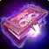
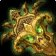
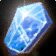
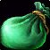
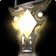

Blind-Seers Icon
Blind-Seers IconBlind-Seers Icon25 stamina, 16 intellect, 42 spell damage, 42 healing power, 24 spell hit rating (1.90%)Drops from Shade of Akama, Black Temple
25 stamina, 16 intellect, 42 spell damage, 42 healing power, 24 spell
hit rating (1.90%)
Drops from Shade of Akama, Black Temple
Showing all 6 spec cards.
No specs are selected, so no cards are showing. Use Show every spec to bring all of them back.
Elemental Shaman
Prioritynot yet decided
Constraints
Hit cap16%spells
Elemental Precision-6%
Nature's Guidance-3%
Totem of Wrath-3%
Gear needs4%
Entry4.1%clear
by 0.1%
Tier hands5.7%clear
by 1.7%
Tier hands and head4.3%clear
by 0.2%
No crit cap.
Part of this spec's damage is periodic, and periodic damage cannot crit
in this patch, so crit reaches less of its output than the character
sheet suggests.
Global cooldown floor at 50% spell haste, which nothing rostered reaches
from gear this phase.
Delta
Blind-Seers IconBlind-Seers
Icon25 stamina, 16 intellect, 42
spell damage, 42 healing power, 24 spell hit rating (1.90%)Drops from Shade of Akama, Black
Temple in Elemental
Shaman terms
| Stat | Over best weapon, Hyjal
Summit
 Chronicle of Dark SecretsChronicle of Dark Secrets16 stamina, 12 intellect, 42 spell damage, 42 healing power, 17 spell hit rating (1.35%), 23 spell crit rating (1.04%)Drops from Rage Winterchill, Mount Hyjal |
Over second best, Hyjal
Summit
 Antonidas's Aegis of Rapt ConcentrationAntonidas's Aegis of Rapt Concentration6336 armor, 28 stamina, 20 intellect, 42 spell damage, 42 healing power, 20 spell crit rating (0.91%), 174 block valueDrops from Archimonde, Mount Hyjal |
Over third best, Serpentshrine
Cavern
 FathomstoneFathomstone16 stamina, 12 intellect, 36 spell damage, 36 healing power, 23 spell crit rating (1.04%)Drops from Hydross the Unstable, Serpentshrine Cavern |
Over fourth best,
Badge of Justice
 Khadgar's KnapsackKhadgar's Knapsack49 spell damage, 49 healing power |
Over carried into the tier, Serpentshrine Cavern FathomstoneFathomstone16 stamina, 12 intellect, 36 spell damage, 36 healing power, 23 spell crit rating (1.04%)Drops from Hydross the Unstable, Serpentshrine Cavern | |||||
|---|---|---|---|---|---|---|---|---|---|---|
| Change | Converted | Change | Converted | Change | Converted | Change | Converted | Change | Converted | |
| armor | 0 | -6336 | 0 | 0 | 0 | |||||
| stamina | +9 | -3 | +9 | +25 | +9 | |||||
| intellect | +4 | +0.05% spell crit | -4 | -0.05% spell crit | +4 | +0.05% spell crit | +16 | +0.20% spell crit | +4 | +0.05% spell crit |
| spell damage | 0 | 0 | +6 | -7 | +6 | |||||
| healing power | 0 | 0 | +6 | -7 | +6 | |||||
| spell hit | +7 | +0.55% | +24 | +1.90% | +24 | +1.90% | +24 | +1.90% | +24 | +1.90% |
| spell crit | -23 | -1.04% | -20 | -0.91% | -23 | -1.04% | 0 | -23 | -1.04% | |
| block value | 0 | -174 | 0 | 0 | 0 | |||||
| Stat Highlights (Totals) | -0.99% spell crit +0.55% spell hit | -0.96% spell crit +1.90% spell hit | -0.99% spell crit +6 spell damage +6 healing power +1.90% spell hit | +0.20% spell crit -7 spell damage -7 healing power +1.90% spell hit | -0.99% spell crit +6 spell damage +6 healing power +1.90% spell hit | |||||
No Season 3 arena and no Season 2 arena is ranked for this spec in this
slot, so that comparison is not shown. A weapon the workbook does not
rank cannot be compared against, and a spec with no captured gear set
has nothing recorded to carry in.
Balance Druid
Prioritynot yet decided
Constraints
Hit cap16%spells
Balance of Power-4%
Totem of Wrath-3%
Gear needs9%
Entry8.5%short
by 0.6%
Tier hands7.5%short
by 1.5%
Closed by 2 hit gems against 8 sockets in the set.
Tier hands and head8.4%short
by 0.6%
Closed by 1 hit gem against 7 sockets in the set.
Tier rows assume both reachable tokens. Either token breaks the Tier 5
four-piece, whose slots are head, shoulder, chest and hands; both tokens
are raw EPV gains, so the collision is the bonus and not the items.
No crit cap.
Part of this spec's damage is periodic, and periodic damage cannot crit
in this patch, so crit reaches less of its output than the character
sheet suggests.
Global cooldown floor at 50% spell haste, which nothing rostered reaches
from gear this phase.
Delta
Blind-Seers IconBlind-Seers
Icon25 stamina, 16 intellect, 42
spell damage, 42 healing power, 24 spell hit rating (1.90%)Drops from Shade of Akama, Black
Temple in Balance Druid
terms
| Stat | Over best weapon, Hyjal Summit Chronicle of Dark SecretsChronicle of Dark Secrets16 stamina, 12 intellect, 42 spell damage, 42 healing power, 17 spell hit rating (1.35%), 23 spell crit rating (1.04%)Drops from Rage Winterchill, Mount Hyjal | Over second best, Badge of Justice Khadgar's KnapsackKhadgar's Knapsack49 spell damage, 49 healing power | Over third best, Karazhan Jewel of Infinite PossibilitiesJewel of Infinite Possibilities19 stamina, 18 intellect, 23 spell damage, 23 healing power, 21 spell hit rating (1.66%)Drops from Netherspite, Karazhan | Over fourth best, Serpentshrine Cavern FathomstoneFathomstone16 stamina, 12 intellect, 36 spell damage, 36 healing power, 23 spell crit rating (1.04%)Drops from Hydross the Unstable, Serpentshrine Cavern | Over Season 2 arena, Season 2 Merciless Gladiator's EndgameMerciless Gladiator's Endgame27 stamina, 19 intellect, 33 spell damage, 33 healing power, 27 resilience | |||||
|---|---|---|---|---|---|---|---|---|---|---|
| Change | Converted | Change | Converted | Change | Converted | Change | Converted | Change | Converted | |
| stamina | +9 | +25 | +6 | +9 | -2 | |||||
| intellect | +4 | +0.05% spell crit · +1 spell damage · +1 healing power | +16 | +0.20% spell crit · +4 spell damage · +4 healing power | -2 | -0.03% spell crit · -0.50 spell damage · -0.50 healing power | +4 | +0.05% spell crit · +1 spell damage · +1 healing power | -3 | -0.04% spell crit · -0.75 spell damage · -0.75 healing power |
| spell damage | 0 | -7 | +19 | +6 | +9 | |||||
| healing power | 0 | -7 | +19 | +6 | +9 | |||||
| spell hit | +7 | +0.55% | +24 | +1.90% | +3 | +0.24% | +24 | +1.90% | +24 | +1.90% |
| spell crit | -23 | -1.04% | 0 | 0 | -23 | -1.04% | 0 | |||
| resilience | 0 | 0 | 0 | 0 | -27 | -27 resilience | ||||
| Stat Highlights (Totals) | -0.99% spell crit +1 spell damage +1 healing power +0.55% spell hit | +0.20% spell crit -3 spell damage -3 healing power +1.90% spell hit | -0.03% spell crit +18.50 spell damage +18.50 healing power +0.24% spell hit | -0.99% spell crit +7 spell damage +7 healing power +1.90% spell hit | -0.04% spell crit +8.25 spell damage +8.25 healing power +1.90% spell hit | |||||
No Season 3 arena and no carried into the tier is ranked for this spec
in this slot, so that comparison is not shown. A weapon the workbook
does not rank cannot be compared against, and a spec with no captured
gear set has nothing recorded to carry in.
Arcane Mage
Prioritynot yet decided
Constraints
Hit cap16%spells
Arcane Focus-10%
Gear needs6%
Entry6.6%clear
by 0.6%
Tier hands4%short by
2.1%
Closed by 3 hit gems against 10 sockets in the set.
Tier hands, keeps T5 helm6.7%clear
by 0.6%
No crit cap.
Global cooldown floor at 50% spell haste, which nothing rostered reaches
from gear this phase.
Delta
Blind-Seers IconBlind-Seers
Icon25 stamina, 16 intellect, 42
spell damage, 42 healing power, 24 spell hit rating (1.90%)Drops from Shade of Akama, Black
Temple in Arcane Mage
terms
| Stat | Over best weapon, Hyjal Summit Chronicle of Dark SecretsChronicle of Dark Secrets16 stamina, 12 intellect, 42 spell damage, 42 healing power, 17 spell hit rating (1.35%), 23 spell crit rating (1.04%)Drops from Rage Winterchill, Mount Hyjal | Over second best, Karazhan Talisman of NightbaneTalisman of Nightbane19 stamina, 19 intellect, 28 spell damage, 28 healing power, 17 spell crit rating (0.77%)Drops from Nightbane, Karazhan | Over third best, Badge of Justice Talisman of KalecgosTalisman of Kalecgos14 intellect, 50 arcane damage | Over fourth best, Serpentshrine Cavern FathomstoneFathomstone16 stamina, 12 intellect, 36 spell damage, 36 healing power, 23 spell crit rating (1.04%)Drops from Hydross the Unstable, Serpentshrine Cavern | Over Season 2 arena, Season 2 Merciless Gladiator's EndgameMerciless Gladiator's Endgame27 stamina, 19 intellect, 33 spell damage, 33 healing power, 27 resilience | |||||
|---|---|---|---|---|---|---|---|---|---|---|
| Change | Converted | Change | Converted | Change | Converted | Change | Converted | Change | Converted | |
| stamina | +9 | +6 | +25 | +9 | -2 | |||||
| intellect | +4 | +0.06% spell crit · +1.15 spell damage | -3 | -0.04% spell crit · -0.86 spell damage | +2 | +0.03% spell crit · +0.57 spell damage | +4 | +0.06% spell crit · +1.15 spell damage | -3 | -0.04% spell crit · -0.86 spell damage |
| spell damage | 0 | +14 | +42 | +6 | +9 | |||||
| healing power | 0 | +14 | +42 | +6 | +9 | |||||
| arcane damage | 0 | 0 | -50 | 0 | 0 | |||||
| spell hit | +7 | +0.55% | +24 | +1.90% | +24 | +1.90% | +24 | +1.90% | +24 | +1.90% |
| spell crit | -23 | -1.04% | -17 | -0.77% | 0 | -23 | -1.04% | 0 | ||
| resilience | 0 | 0 | 0 | 0 | -27 | -27 resilience | ||||
| Stat Highlights (Totals) | -0.98% spell crit +1.15 spell damage +0.55% spell hit | -0.81% spell crit +13.14 spell damage +14 healing power +1.90% spell hit | +0.03% spell crit +42.58 spell damage +42 healing power +1.90% spell hit | -0.98% spell crit +7.15 spell damage +6 healing power +1.90% spell hit | -0.04% spell crit +8.14 spell damage +9 healing power +1.90% spell hit | |||||
No Season 3 arena and no carried into the tier is ranked for this spec
in this slot, so that comparison is not shown. A weapon the workbook
does not rank cannot be compared against, and a spec with no captured
gear set has nothing recorded to carry in.
Shadow Priest
Prioritynot yet decided
Constraints
Hit cap16%spells
Shadow Focus-10%
Gear needs6%
Entry7.3%clear
by 1.3%
Tier hands16.4%clear
by 10.4%
Tier hands and head14.5%clear
by 8.5%
No crit cap.
Part of this spec's damage is periodic, and periodic damage cannot crit
in this patch, so crit reaches less of its output than the character
sheet suggests.
Global cooldown floor at 50% spell haste, which nothing rostered reaches
from gear this phase.
Delta
Blind-Seers IconBlind-Seers
Icon25 stamina, 16 intellect, 42
spell damage, 42 healing power, 24 spell hit rating (1.90%)Drops from Shade of Akama, Black
Temple in Shadow Priest
terms
| Stat | Over best weapon Draenei Crystal RodDraenei Crystal Rod | Over second best, Hyjal Summit Chronicle of Dark SecretsChronicle of Dark Secrets16 stamina, 12 intellect, 42 spell damage, 42 healing power, 17 spell hit rating (1.35%), 23 spell crit rating (1.04%)Drops from Rage Winterchill, Mount Hyjal | Over third best, Badge of Justice Orb of the Soul-EaterOrb of the Soul-Eater18 stamina, 51 shadow damage | Over fourth best, Badge of Justice Khadgar's KnapsackKhadgar's Knapsack49 spell damage, 49 healing power | Over Season 2 arena, Season 2 Merciless Gladiator's EndgameMerciless Gladiator's Endgame27 stamina, 19 intellect, 33 spell damage, 33 healing power, 27 resilience | Over carried into the tier, Badge of Justice Orb of the Soul-EaterOrb of the Soul-Eater18 stamina, 51 shadow damage | ||||||
|---|---|---|---|---|---|---|---|---|---|---|---|---|
| Change | Converted | Change | Converted | Change | Converted | Change | Converted | Change | Converted | Change | Converted | |
| stamina | +25 | +9 | +7 | +25 | -2 | +7 | ||||||
| intellect | +16 | +0.20% spell crit | +4 | +0.05% spell crit | +16 | +0.20% spell crit | +16 | +0.20% spell crit | -3 | -0.04% spell crit | +16 | +0.20% spell crit |
| spell damage | +42 | 0 | +42 | -7 | +9 | +42 | ||||||
| healing power | +42 | 0 | +42 | -7 | +9 | +42 | ||||||
| shadow damage | 0 | 0 | -51 | 0 | 0 | -51 | ||||||
| spell hit | +24 | +1.90% | +7 | +0.55% | +24 | +1.90% | +24 | +1.90% | +24 | +1.90% | +24 | +1.90% |
| spell crit | 0 | -23 | -1.04% | 0 | 0 | 0 | 0 | |||||
| resilience | 0 | 0 | 0 | 0 | -27 | -27 resilience | 0 | |||||
| Stat Highlights (Totals) | +0.20% spell crit +42 spell damage +42 healing power +1.90% spell hit | -0.99% spell crit +0.55% spell hit | +0.20% spell crit +42 spell damage +42 healing power +1.90% spell hit | +0.20% spell crit -7 spell damage -7 healing power +1.90% spell hit | -0.04% spell crit +9 spell damage +9 healing power +1.90% spell hit | +0.20% spell crit +42 spell damage +42 healing power +1.90% spell hit | ||||||
No Season 3 arena is ranked for this spec in this slot, so that
comparison is not shown. A weapon the workbook does not rank cannot be
compared against, and a spec with no captured gear set has nothing
recorded to carry in.
Affliction Warlock
Prioritynot yet decided
Constraints
Hit cap16%spells
Totem of Wrath-3%
Gear needs13.1%
The Suppression talent does not cover this spec's filler spell, so none
of it counts.
Entry16.1%clear
by 3%
Tier hands13.9%clear
by 0.8%
Tier hands and head15%clear
by 1.9%
No crit cap.
Part of this spec's damage is periodic, and periodic damage cannot crit
in this patch, so crit reaches less of its output than the character
sheet suggests.
Global cooldown floor at 50% spell haste, which nothing rostered reaches
from gear this phase.
Delta
Blind-Seers IconBlind-Seers
Icon25 stamina, 16 intellect, 42
spell damage, 42 healing power, 24 spell hit rating (1.90%)Drops from Shade of Akama, Black
Temple in Affliction
Warlock terms
| Stat | Over best weapon, Hyjal Summit Chronicle of Dark SecretsChronicle of Dark Secrets16 stamina, 12 intellect, 42 spell damage, 42 healing power, 17 spell hit rating (1.35%), 23 spell crit rating (1.04%)Drops from Rage Winterchill, Mount Hyjal | Over second best, Arcatraz
 Lamp of Peaceful RadianceLamp of Peaceful Radiance13 stamina, 14 intellect, 21 spell damage, 21 healing power, 12 spell hit rating (0.95%), 13 spell crit rating (0.59%) |
Over third best, Karazhan Jewel of Infinite PossibilitiesJewel of Infinite Possibilities19 stamina, 18 intellect, 23 spell damage, 23 healing power, 21 spell hit rating (1.66%)Drops from Netherspite, Karazhan | Over fourth best, Serpentshrine Cavern FathomstoneFathomstone16 stamina, 12 intellect, 36 spell damage, 36 healing power, 23 spell crit rating (1.04%)Drops from Hydross the Unstable, Serpentshrine Cavern | Over Season 2 arena, Season 2 Merciless Gladiator's EndgameMerciless Gladiator's Endgame27 stamina, 19 intellect, 33 spell damage, 33 healing power, 27 resilience | Over carried into the tier, Karazhan Jewel of Infinite PossibilitiesJewel of Infinite Possibilities19 stamina, 18 intellect, 23 spell damage, 23 healing power, 21 spell hit rating (1.66%)Drops from Netherspite, Karazhan | ||||||
|---|---|---|---|---|---|---|---|---|---|---|---|---|
| Change | Converted | Change | Converted | Change | Converted | Change | Converted | Change | Converted | Change | Converted | |
| stamina | +9 | +12 | +6 | +9 | -2 | +6 | ||||||
| intellect | +4 | +0.05% spell crit | +2 | +0.02% spell crit | -2 | -0.02% spell crit | +4 | +0.05% spell crit | -3 | -0.04% spell crit | -2 | -0.02% spell crit |
| spell damage | 0 | +21 | +19 | +6 | +9 | +19 | ||||||
| healing power | 0 | +21 | +19 | +6 | +9 | +19 | ||||||
| spell hit | +7 | +0.55% | +12 | +0.95% | +3 | +0.24% | +24 | +1.90% | +24 | +1.90% | +3 | +0.24% |
| spell crit | -23 | -1.04% | -13 | -0.59% | 0 | -23 | -1.04% | 0 | 0 | |||
| resilience | 0 | 0 | 0 | 0 | -27 | -27 resilience | 0 | |||||
| Stat Highlights (Totals) | -0.99% spell crit +0.55% spell hit | -0.56% spell crit +21 spell damage +21 healing power +0.95% spell hit | -0.02% spell crit +19 spell damage +19 healing power +0.24% spell hit | -0.99% spell crit +6 spell damage +6 healing power +1.90% spell hit | -0.04% spell crit +9 spell damage +9 healing power +1.90% spell hit | -0.02% spell crit +19 spell damage +19 healing power +0.24% spell hit | ||||||
No Season 3 arena is ranked for this spec in this slot, so that
comparison is not shown. A weapon the workbook does not rank cannot be
compared against, and a spec with no captured gear set has nothing
recorded to carry in.
Destruction Warlock
Prioritynot yet decided
Constraints
Hit cap16%spells
Totem of Wrath-3%
Gear needs13.1%
No hit talent exists for this spec.
Entry13.5%clear
by 0.4%
Tier hands14%clear
by 1%
Tier hands and head16.6%clear
by 3.6%
No crit cap.
Global cooldown floor at 50% spell haste, which nothing rostered reaches
from gear this phase.
Delta
Blind-Seers IconBlind-Seers
Icon25 stamina, 16 intellect, 42
spell damage, 42 healing power, 24 spell hit rating (1.90%)Drops from Shade of Akama, Black
Temple in Destruction
Warlock terms
| Stat | Over best weapon, Hyjal Summit Chronicle of Dark SecretsChronicle of Dark Secrets16 stamina, 12 intellect, 42 spell damage, 42 healing power, 17 spell hit rating (1.35%), 23 spell crit rating (1.04%)Drops from Rage Winterchill, Mount Hyjal | Over second best, Serpentshrine Cavern FathomstoneFathomstone16 stamina, 12 intellect, 36 spell damage, 36 healing power, 23 spell crit rating (1.04%)Drops from Hydross the Unstable, Serpentshrine Cavern | Over third best, Badge of Justice Flametongue SealFlametongue Seal49 fire damage, 17 spell crit rating (0.77%) | Over fourth best, Karazhan Jewel of Infinite PossibilitiesJewel of Infinite Possibilities19 stamina, 18 intellect, 23 spell damage, 23 healing power, 21 spell hit rating (1.66%)Drops from Netherspite, Karazhan | Over Season 2 arena, Season 2 Merciless Gladiator's EndgameMerciless Gladiator's Endgame27 stamina, 19 intellect, 33 spell damage, 33 healing power, 27 resilience | Over carried into the tier, Badge of Justice Flametongue SealFlametongue Seal49 fire damage, 17 spell crit rating (0.77%) | ||||||
|---|---|---|---|---|---|---|---|---|---|---|---|---|
| Change | Converted | Change | Converted | Change | Converted | Change | Converted | Change | Converted | Change | Converted | |
| stamina | +9 | +9 | +25 | +6 | -2 | +25 | ||||||
| intellect | +4 | +0.05% spell crit | +4 | +0.05% spell crit | +16 | +0.20% spell crit | -2 | -0.02% spell crit | -3 | -0.04% spell crit | +16 | +0.20% spell crit |
| spell damage | 0 | +6 | +42 | +19 | +9 | +42 | ||||||
| healing power | 0 | +6 | +42 | +19 | +9 | +42 | ||||||
| fire damage | 0 | 0 | -49 | 0 | 0 | -49 | ||||||
| spell hit | +7 | +0.55% | +24 | +1.90% | +24 | +1.90% | +3 | +0.24% | +24 | +1.90% | +24 | +1.90% |
| spell crit | -23 | -1.04% | -23 | -1.04% | -17 | -0.77% | 0 | 0 | -17 | -0.77% | ||
| resilience | 0 | 0 | 0 | 0 | -27 | -27 resilience | 0 | |||||
| Stat Highlights (Totals) | -0.99% spell crit +0.55% spell hit | -0.99% spell crit +6 spell damage +6 healing power +1.90% spell hit | -0.57% spell crit +42 spell damage +42 healing power +1.90% spell hit | -0.02% spell crit +19 spell damage +19 healing power +0.24% spell hit | -0.04% spell crit +9 spell damage +9 healing power +1.90% spell hit | -0.57% spell crit +42 spell damage +42 healing power +1.90% spell hit | ||||||
No Season 3 arena is ranked for this spec in this slot, so that
comparison is not shown. A weapon the workbook does not rank cannot be
compared against, and a spec with no captured gear set has nothing
recorded to carry in.